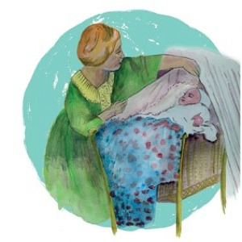

Mnogaja leta! 20 jaar Kaskedieze
|
Ter gelegenheid van ons 20-jarig bestaan in 2009 hebben we een CD opgenomen. Bij de helft van de nummers wordt het koor op de cd begeleid door een viertal musici, die tezamen een tiental instrumenten bespelen. De CD is bij koorleden verkrijgbaar voor 5 €. Hieronder staan twee nummers in een afgezwakte mp3 vorm, één lied a capella en één met begeleiding. Voor de echte kwaliteit moet u de CD zelf beluisteren. |
|
|  |

|
|
De opname van de CD werd ondersteund met een ruime subsidie van het Schipholfonds. |